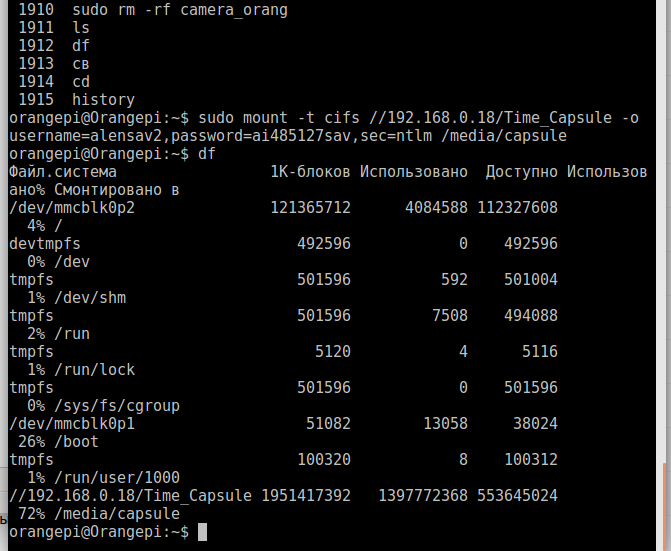
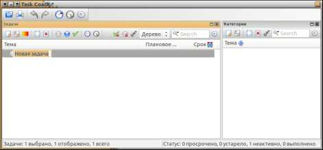

1. С помощью утилиты ncdu сделан анализ дискового заполнения sd card в
Orangepi и освобождено дисковое пространство /media/capsule

2.ежедневники.
Task Coach - весьма информативный и широко настраиваемый органайзер для деловых людей, у которых список текущих и запланированных дел, настолько объёмен, что удерживать всё в памяти становится просто невозможным. Для решения подобной проблемы, можно нанять на работу секретаршу, в обязанности которой и будет входить, слежение за ходом всех происходящий событий. Но, можно поступить проще - установить себе на компьютер Task Coach, который отлично справится с решением данной проблемы, да к тому же, ему денег платить не нужно.
После установки и первого запуска, программа как-то сразу произвела положительное впечатление, так иногда бывает, достаточно лишь запустить приложение и уже где-то подсознательно ты понимаешь, что эта програ классная. Настраиваимость программы - широчайшая и хоть лично я, недолюбливаю программы, в настройках которых нужно усердно разбираться по пол дня, Task Coach пожалуй будет исключением.

Список ваших дел и задач, поддаётся различным тонким корректировкам, это, сортировка их по атрибутике, например: дате, времени, приоритету, опять-таки времени израсходованному на выполнение задания и т.д., определение для каждой задачи: заголовка, описания, приоритета, времени и даты начала, времени и даты окончания, времени и даты выполнения, сортировка и фильтрация, плюс функция напоминания. Одним словом - это классный планировщик вашего делового времени.
Перечень возможностей в общих чертах:
1) Создание задач.
2) Тоже, редактирование.
3) Тоже, удаление.
4) Всё тоже самое для подзадач.
5) Дневной цикл повтора задачи.
6) Тоже, недельный.
7) Тоже, месячный.
8) Наличие множества атрибутов для задач.
9) Сортировка и фильтрация.
10) Создание задач - перетаскиванием мышью.
11) Создание категорий.
12) Авто-сохранение настроек.
13) Контроль времени, затраченного на задачу.
14) Задачи могут быть бюджетные.
15) Экспорт задач, записей, усилий, категорий.
16) Синхронизация с сервером Funambol.
17) Наличие множества языков, русский - есть!
Task Coach - выпускается в самых различных интерпритациях и может быть установлен на: Linux, Windows, Mac OS X, iPhone, iPad, iPod Touch. Для установки его в Ubuntu, откройте терминал и выполните:
sudo add-apt-repository ppa:taskcoach-developers/ppa
sudo apt-get update
sudo apt-get install taskcoach
После установки вы найдёте Task Coach в меню Dash. Удаление Task Coach выполняется так:
sudo add-apt-repository --remove ppa:taskcoach-developers/ppa
sudo apt-get update
sudo apt-get purge taskcoach
Положительные характеристики Task Coach:
Отрицательные характеристики Task Coach:
===============================================
3.RedNotebook - графический дневник для записей.
Автор: admin.
RedNotebook - очень простой дневничок для ведения записей ваших мыслей, что-то вроде записной книжки, как-то так можно его классифицировать, либо, как наилегчайший органайзер. На первый взгляд, программа выглядит как-то неказисто и малопривлекательно, но попробовав её в действии, отношение к ней резко меняется. На деле оказывается, что это достаточно удобная "записулька", пользоваться которой - одно удовольствие. Имеется всего два режима работы: режим редактирования и режим просмотра.
Команда xkill — простейший способ завершить неправильно работающую команду. После запуска команды xkill вам будет предложено указать курсором на окно, которое будет закрыто:
$ xkill
Select the window whose client you wish to kill with button 1....
xkill: killing creator of resource 0x1200003